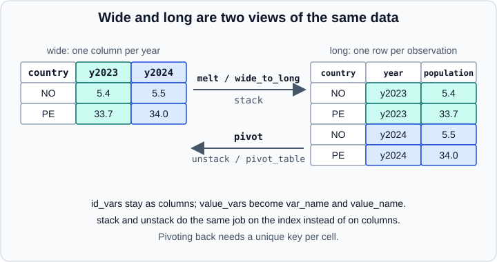

Melt, Stack & Explode in pandas
|
This content was generated with the assistance of AI and should be verified against the official documentation before being relied on in production. |
This page covers the operations that make a table longer: melt and wide_to_long turn columns into rows, stack
moves a column level into the index (and unstack reverses it), and explode turns list-like cells into one row per
element. The opposite direction for columns is pivot, described in
Pivot & Pivot Tables. The page targets pandas 3.1 on Python 3.13
or 3.14 and was checked in October 2026. Every example was run with Python 3.13, NumPy 2.5.4 and pandas 3.1.0, and the
printed output is the real output.
All examples assume these imports:
import numpy as np
import pandas as pdThe figure shows the idea behind the first two sections: the same data in a wide and in a long layout.

melt: columns to rows
DataFrame.melt (also pd.melt) unpivots a frame. The columns in id_vars stay as identifiers, the columns in
value_vars are stacked into two new columns whose names are var_name and value_name.
wide = pd.DataFrame({"country": ["NO", "PE"], "continent": ["EU", "SA"],
"y2023": [5.4, 33.7], "y2024": [5.5, 34.0]})
long = wide.melt(id_vars=["country", "continent"], var_name="year", value_name="population")
print(long) country continent year population
0 NO EU y2023 5.4
1 PE SA y2023 33.7
2 NO EU y2024 5.5
3 PE SA y2024 34.0Source: pandas.melt.
Parameters
| Parameter | Meaning |
|---|---|
|
Column or list of columns kept as identifiers. |
|
Columns to unpivot. When omitted, every column that is not in |
|
Names of the new columns. They default to |
|
For |
|
|
Choosing value_vars restricts the melt, and without id_vars every column is melted, which rarely is what you want:
print(wide.melt(id_vars="country", value_vars=["y2024"], ignore_index=False))
print(wide.melt()) country variable value
0 NO y2024 5.5
1 PE y2024 34.0
variable value
0 country NO
1 country PE
2 continent EU
3 continent SA
4 y2023 5.4
5 y2023 33.7
6 y2024 5.5
7 y2024 34.0Source: pandas.DataFrame.melt.
The second result shows the pitfall: melting columns of different types produces a value column of mixed object
data. Always list the identifier columns.
With MultiIndex columns, col_level picks which level supplies the variable names:
mc = pd.DataFrame(np.arange(6).reshape(2, 3),
columns=pd.MultiIndex.from_tuples([("a", "x"), ("a", "y"), ("b", "x")], names=["g", "h"]))
print(mc.melt(col_level=0)) g value
0 a 0
1 a 3
2 a 1
3 a 4
4 b 2
5 b 5Source: pandas.DataFrame.melt.
Going back with pivot
pivot reverses a melt when the identifiers and the variable form a unique key:
back = long.pivot(index=["country", "continent"], columns="year", values="population").reset_index()
back.columns.name = None
print(back) country continent y2023 y2024
0 NO EU 5.4 5.5
1 PE SA 33.7 34.0Source: pandas.melt.
wide_to_long: several measurements per row
pd.wide_to_long handles column names built from a stub and a suffix, such as A1970 and A1980. It returns a
frame indexed by the identifier and the suffix, with one column per stub:
w = pd.DataFrame({"id": [1, 2], "A1970": [1.0, 2.0], "A1980": [3.0, 4.0],
"B1970": [5.0, 6.0], "B1980": [7.0, 8.0], "name": ["p", "q"]})
print(pd.wide_to_long(w, stubnames=["A", "B"], i="id", j="year")) name A B
id year
1 1970 p 1.0 5.0
2 1970 q 2.0 6.0
1 1980 p 3.0 7.0
2 1980 q 4.0 8.0Source: pandas.wide_to_long.
Columns that do not match a stub (name) are carried along. The i argument must identify rows uniquely. When the
suffix is not numeric, use sep and a regular expression suffix:
w2 = pd.DataFrame({"id": [1, 2], "score_math": [9, 8], "score_art": [7, 6]})
print(pd.wide_to_long(w2, stubnames="score", i="id", j="subject", sep="_", suffix=r"\D+")) score
id subject
1 math 9
2 math 8
1 art 7
2 art 6Source: pandas.wide_to_long.
stack and unstack: moving index levels
stack moves a level of the columns into the row index; unstack moves a level of the row index into the columns.
They are the index-based counterparts of melt and pivot and the natural tools for a MultiIndex (see
MultiIndex).
idx = pd.MultiIndex.from_product([["bar", "baz"], ["one", "two"]], names=["first", "second"])
df = pd.DataFrame(np.arange(8, dtype=float).reshape(4, 2), index=idx, columns=["A", "B"])
df.iloc[1, 0] = np.nan
print(df)
st = df.stack()
print(st)
print(st.index.names) A B
first second
bar one 0.0 1.0
two NaN 3.0
baz one 4.0 5.0
two 6.0 7.0
first second
bar one A 0.0
B 1.0
two A NaN
B 3.0
baz one A 4.0
B 5.0
two A 6.0
B 7.0
dtype: float64
['first', 'second', None]Stacking a single-level column index yields a Series whose new, innermost index level is unnamed (None). unstack
takes a level number or name, and moves the innermost level by default:
print(st.unstack())
print(st.unstack(level=0))
print(df.unstack()) A B
first second
bar one 0.0 1.0
two NaN 3.0
baz one 4.0 5.0
two 6.0 7.0
first bar baz
second
one A 0.0 4.0
B 1.0 5.0
two A NaN 6.0
B 3.0 7.0
A B
second one two one two
first
bar 0.0 NaN 1.0 3.0
baz 4.0 6.0 5.0 7.0With several column levels, level= takes a list or a name, and a frame results:
cols = pd.MultiIndex.from_product([["w"], ["a", "b"], ["x", "y"]], names=["l0", "l1", "l2"])
m = pd.DataFrame(np.arange(8).reshape(2, 4), columns=cols)
print(m.stack(level="l2"))l0 w
l1 a b
l2
0 x 0 2
y 1 3
1 x 4 6
y 5 7The new stack implementation (pandas 3.0)
pandas 2.1 introduced a rewritten stack behind future_stack=True. In pandas 3.0 it is the only implementation and the
default. Two behaviours differ from older tutorials:
-
The new implementation does not drop rows that are entirely missing. The old one removed them by default (
dropna=True), so theNaNfor("bar", "two", "A")above is kept. The result always haslen(df) * len(df.columns)rows. -
It does not sort the new level; the order of the original columns is preserved.
The old keywords still exist so that old code does not break outright, but they are deprecated. Passing dropna or
sort raises a ValueError. Passing future_stack=False emits a deprecation warning, while future_stack=True is
accepted silently:
try:
df.stack(dropna=False)
except ValueError as err:
print("ValueError:", err)
try:
df.stack(sort=True)
except ValueError as err:
print("ValueError:", err)ValueError: dropna must be unspecified as the new implementation does not introduce rows of NA values. This argument will be removed in a future version of pandas.
ValueError: Cannot specify sort, this argument will be removed in a future version of pandas. Sort the result using .sort_index instead.Source: pandas.DataFrame.stack.
To get the old dropping behaviour, call df.stack().dropna(); to sort, call .sort_index(). Calling
df.stack(future_stack=False) still returns the old result in pandas 3.1, but emits a Pandas4Warning and the argument
will be removed.
unstack and missing combinations
If some index combinations are absent, unstack introduces missing values, which turn integer data into floats. fill_value
avoids both effects:
s = pd.Series([1, 2, 3], index=pd.MultiIndex.from_tuples([("a", "x"), ("a", "y"), ("b", "x")]))
print(s.unstack())
print(s.unstack(fill_value=0)) x y
a 1.0 2.0
b 3.0 NaN
x y
a 1 2
b 3 0Like pivot, unstack requires a unique index: duplicate entries raise ValueError: Index contains duplicate entries,
cannot reshape.
explode: list-like cells to rows
DataFrame.explode (and Series.explode) transforms each element of a list-like cell into its own row, repeating the
other columns. The index labels are repeated unless ignore_index=True:
d = pd.DataFrame({"id": [1, 2, 3, 4], "tags": [["a", "b"], [], None, ["c"]], "n": [10, 20, 30, 40]})
print(d.explode("tags"))
print(d.explode("tags", ignore_index=True).dtypes) id tags n
0 1 a 10
0 1 b 10
1 2 NaN 20
2 3 NaN 30
3 4 c 40
id int64
tags str
n int64
dtype: objectSource: DataFrame.explode and pandas.json_normalize.
Empty lists and missing values give a single row with NaN. Scalars are passed through unchanged, and tuples, sets
(which have no order) and arrays count as list-like in a Series:
print(pd.Series([[1, 2], "scalar", (3, 4), set()]).explode())0 1
0 2
1 scalar
2 3
2 4
3 NaN
dtype: objectSource: DataFrame.explode and pandas.json_normalize.
Several columns can be exploded together when every row has the same number of elements in each column; otherwise pandas
raises ValueError: columns must have matching element counts:
m2 = pd.DataFrame({"a": [[1, 2], [3]], "b": [["x", "y"], ["z"]], "k": [0, 1]})
print(m2.explode(["a", "b"])) a b k
0 1 x 0
0 2 y 0
1 3 z 1Source: DataFrame.explode and pandas.json_normalize.
Common patterns
Split a delimited string with the .str accessor (see
Text Data & the str Dtype) and then explode:
t = pd.DataFrame({"user": ["u1", "u2"], "langs": ["py,sql", "r"]})
print(t.assign(langs=t["langs"].str.split(",")).explode("langs")) user langs
0 u1 py
0 u1 sql
1 u2 rSource: DataFrame.explode and pandas.json_normalize.
Nested records from JSON are normalised with pd.json_normalize. Either explode the list column and expand the
dictionaries, or pass record_path and meta:
j = pd.DataFrame({"o": [1, 2], "items": [[{"sku": "a", "q": 1}, {"sku": "b", "q": 2}], [{"sku": "c", "q": 3}]]})
print(pd.json_normalize(j.to_dict("records"), record_path="items", meta="o")) sku q o
0 a 1 1
1 b 2 1
2 c 3 2Source: DataFrame.explode and pandas.json_normalize.
The inverse of explode is a groupby with list as aggregation:
e = d.explode("tags")
print(e.dropna(subset=["tags"]).groupby("id")["tags"].agg(list))id
1 [a, b]
4 [c]
Name: tags, dtype: objectSource: DataFrame.explode and pandas.json_normalize.
Dummy variables: get_dummies and from_dummies
pd.get_dummies expands a categorical column into indicator columns (one-hot encoding), a form of widening. Pass
dtype=int to get integers (the default is bool), drop_first=True to drop one level, and columns= to encode only
some columns of a frame. pd.from_dummies reverses it:
dm = pd.get_dummies(pd.Series(list("abca")), dtype=int)
print(dm)
print(pd.from_dummies(dm))
print(pd.get_dummies(pd.DataFrame({"c": list("aba"), "n": [1, 2, 3]}), columns=["c"], prefix="c",
drop_first=True, dtype=int)) a b c
0 1 0 0
1 0 1 0
2 0 0 1
3 1 0 0
0 a
1 b
2 c
3 a
n c_b
0 1 0
1 2 1
2 3 0For machine learning pipelines prefer the scikit-learn encoders, which remember the categories seen during fitting; see Feature Engineering.
Source: pandas.get_dummies.
Choosing a function
| Goal | Function | Remember |
|---|---|---|
Columns to rows by name |
|
List |
Columns that share a stub and suffix |
|
|
A column level to the row index |
|
Keeps all-missing rows since 3.0; |
A row index level to columns |
|
Unique index required; |
List-like cells to rows |
|
Index labels repeat; empty lists become |
Older tutorials and books
| Older statement | Current state (pandas 3.1, October 2026) |
|---|---|
|
The new implementation keeps them; |
|
It is the default; the argument is deprecated. |
Wide to long with a loop and |
Use |
|
|